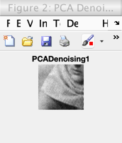
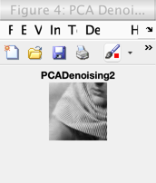
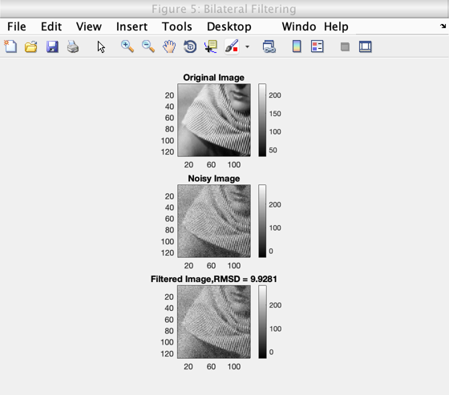
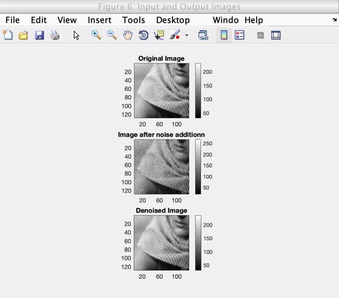
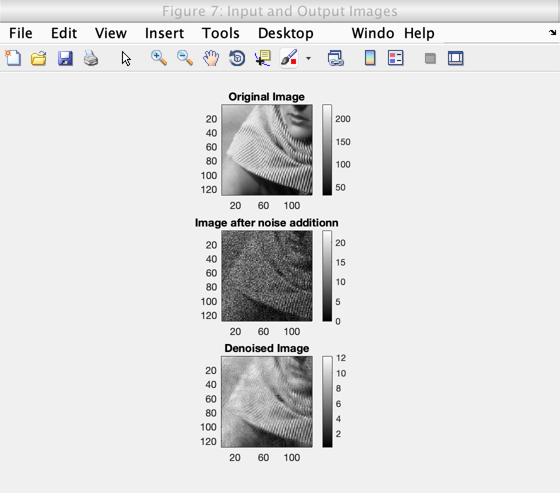

Contents
tic;
image_path = '../data/barbara256-part.png';
image = double(imread(image_path));
Question 5a
output_1 = myPCADenoising1(image);
rmse_value_1 = norm((image(:) - output_1(:) ))/norm(image(:));
fprintf('For myPCADenoising1: \n')
fprintf('Final RMSE Value between the input and output image: %f \n', rmse_value_1);
fprintf('\n\n\n')
figure('name', 'PCA Denoising output 1')
imshow(output_1, []);
title('PCADenoising1');
Denoising Process Completed!
For myPCADenoising1:
Final RMSE Value between the input and output image: 0.063499

Question 5b
output_2 = myPCADenoising2(image);
rmse_value_2 = norm((image(:) - output_2(:) ))/norm(image(:));
fprintf('For myPCADenoising2: \n')
fprintf('Final RMSE Value between the input and output image: %f \n', rmse_value_2);
fprintf('\n\n\n')
figure('name', 'PCA Denoising output 2')
imshow(output_2, []);
title('PCADenoising2');
For myPCADenoising2:
Final RMSE Value between the input and output image: 0.052056

Question 5c (Bilateral Filtering)
window_size = 7;
sigma_r = 0.12;
sigma_s = 1;
[output_3, rmsd_bilateral] = myBilateralFiltering(image, sigma_r, sigma_s, window_size);
fprintf('Final RMSE Value between the input and output image: %f \n', rmsd_bilateral);
fprintf('\n\n')
fprintf('Comparison with the PCA-based approach: \n')
fprintf('1. Very poor image denoising with bilateral filtering as compared to both the variations of the PCA-based approach in parts (a) and (b) above. \n');
fprintf('2. PCA-based approach does a much better job of identifying the underlying pattern in the image by reducing the dimensionality of similar patches and,');
fprintf('\n getting rid of noise in the way.');
fprintf('\n\n\n')
Final RMSE Value between the input and output image: 9.928141
Comparison with the PCA-based approach:
1. Very poor image denoising with bilateral filtering as compared to both the variations of the PCA-based approach in parts (a) and (b) above.
2. PCA-based approach does a much better job of identifying the underlying pattern in the image by reducing the dimensionality of similar patches and,
getting rid of noise in the way.

Question 5d (Poisson Noise)
noisy_image = poissrnd(image);
sqrt_noisy_image = sqrt(noisy_image);
denoised_sqrt_image = myPCADenoising(sqrt_noisy_image, 1/4);
final_denoised_image = denoised_sqrt_image.^2;
RMSE = norm((image(:) - final_denoised_image(:) ))/norm(image(:));
resultDisplay(image, noisy_image, final_denoised_image);
fprintf('For poissrnd(image): \n')
fprintf('Final RMSE Value between the input and output image: %f \n', RMSE);
fprintf('\n\n')
noisy_image2 = poissrnd(image/20);
sqrt_noisy_image2 = sqrt(noisy_image2);
denoised_sqrt_image2 = myPCADenoising(sqrt_noisy_image2, 1/4);
final_denoised_image2 = denoised_sqrt_image2.^2;
RMSE2 = norm((image(:) - final_denoised_image2(:) ))/norm(image(:));
resultDisplay(image, noisy_image2, final_denoised_image2);
fprintf('For poissrnd(image/20): \n')
fprintf('Final RMSE Value between the input and output image: %f \n', RMSE2);
fprintf('\n\n')
fprintf('Observation and Interpretation of Results: \n')
fprintf('For poissrnd(image/20), we have greater noise addition as compared to poissrnd(image). poissrnd(image/20) represents image acquisition with a lower exposure time. \n');
fprintf('RMSE2 >> RMSE1 because of poor reconstruction of the low exposure image. \n');
fprintf('\n\n')
toc;
For poissrnd(image):
Final RMSE Value between the input and output image: 0.037291
For poissrnd(image/20):
Final RMSE Value between the input and output image: 0.951860
Observation and Interpretation of Results:
For poissrnd(image/20), we have greater noise addition as compared to poissrnd(image). poissrnd(image/20) represents image acquisition with a lower exposure time.
RMSE2 >> RMSE1 because of poor reconstruction of the low exposure image.
Elapsed time is 119.706217 seconds.
 